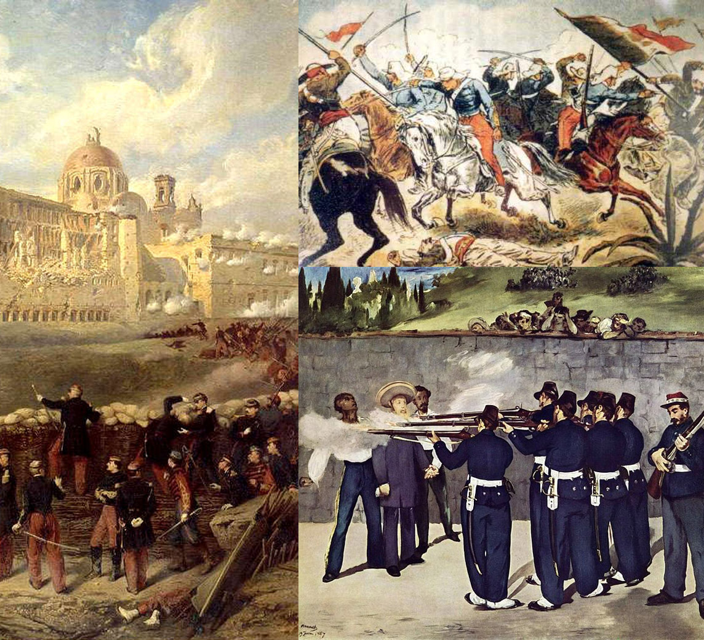
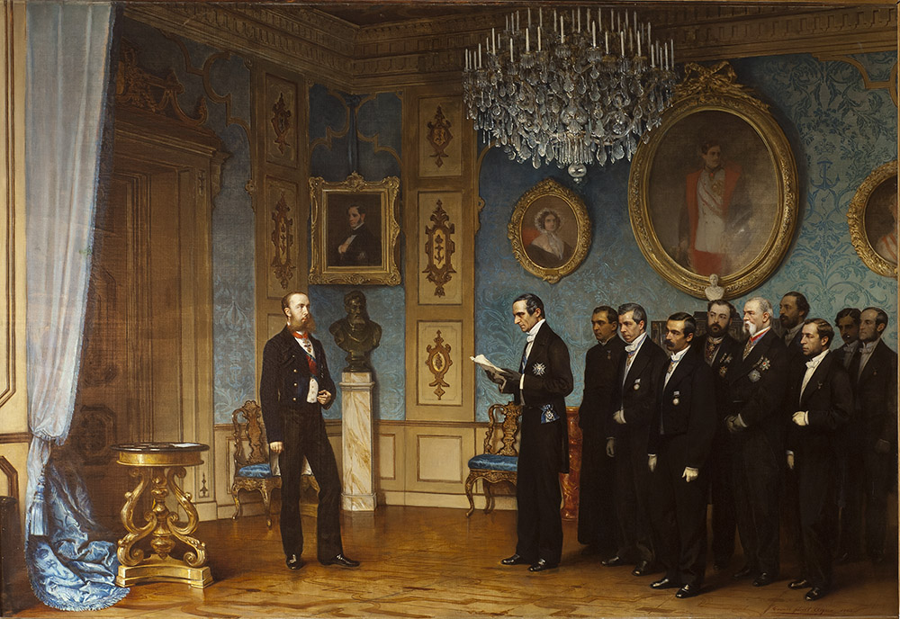

Después de la guerra contra los Estados Unidos surgieron por fin dos partidos políticos con proyectos de nación claros, pero antagónicos. Por un lado Lucas Alaman fundó el Partido Conservador, cuyo programa recogía el principio centralista de la preeminencia del poder central sobre las regiones para lograr la estabilidad del país, a la vez que proponía el gobierno de las clases propietarias, la preservación de los privilegios de la iglesia católica y del ejército por ser, respectivamente, el vínculo de unión más poderoso entre los mexicanos y una garantía de seguridad nacional, y el desarrollo y modernización de la economía apoyada en una política proteccionista. Por el otro lado estaba el Partido Liberal, que proponía un sistema federalista y democrático, la creación de una sociedad moderna sin clases privilegiadas y una economía basada en los principios del liberalismo económico.
La segunda intervención francesa en México fue un conflicto armado entre México y Francia entre los años 1862 y 1867. Tuvo lugar después de que el Gobierno mexicano, encabezado por Benito Juárez, anunciara la suspensión de los pagos de la deuda externa en 1861. Como respuesta, Francia, el Reino Unido y España formaron una alianza llamada Convención de Londres y anunciaron su intención de enviar tropas a México. El Gobierno mexicano derogó la Ley de Suspensión de Pagos, pero la alianza continuó con su plan. Las tropas de la alianza llegaron a Veracruz en 1862 y entraron en negociaciones con el Gobierno de México. Los dirigentes de las misiones británica y española decidieron volver, pero los franceses anunciaron que ocuparían México.
En enero de 1862 ejércitos de las tres potencias europeas desembarcaron en territorio mexicano. Al menos una de ellas arribó con planes imperialistas promovidos por mexicanos, quienes ante el virtual fracaso del partido reaccionario, volcaron los ojos hacia Europa en un afán último por conservar sus privilegios e imponer un gobierno netamente conservador. En 1860-1861, una comisión encabezada por José María Gutiérrez de Estrada, José Manuel Hidalgo y Esnaurrízar y Juan Nepomuceno Almonte persuadiría al gobierno de Napoleón III de apoyar una nueva intervención en México que llevara a implantar una monarquía constitucional. Una vez que se contó con su apoyo, se decidió que el candidato ideal era Maximiliano de Habsburgo, quien, después de poner varias condiciones y reflexionar largamente sobre de ello, aceptó el ofrecimiento que se le hacía.
 Volver